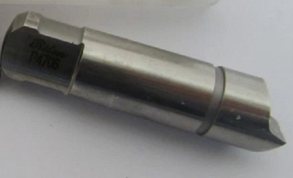
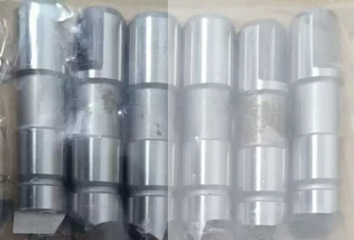

inkslauf-Mitnehmerbolzen für Stirnseitenmitnehmer – präzisionsgefertigt, schnell geliefert, direkt vom Hersteller aus China!


Während viele Standardanwendungen mit Rechtslauf auskommen, gibt es zahlreiche Fälle, in denen eine zuverlässige Mitnahme im Linkslauf unerlässlich ist – beispielsweise bei Gegenlauffräsoperationen, bestimmten Schleifprozessen oder linksdrehenden Spindeln. Hier kommen unsere Spezialprodukte ins Spiel.
Wir sind ein spezialisierter Hersteller von Linkslauf-Mitnehmerbolzen für Stirnseitenmitnehmer (Face Driver) und beliefern Kunden aus der Dreh- und Schleiftechnik weltweit.


Mitnehmerbolzen sind die herzstück eines jeden Stirnseitenmitnehmers. Sie übertragen das Drehmoment formschlüssig vom Face Driver auf das Werkstück. Standardbolzen sind meist für Rechtslauf optimiert – ihre Geometrie, Härtung und Anordnung sind auf eine Belastung in einer Drehrichtung ausgelegt.
Linkslauf-Mitnehmerbolzen (auch Mitnehmerbolzen für Linkslauf genannt) sind speziell für den Betrieb gegen den Uhrzeigersinn konstruiert. Sie verfügen über eine angepasste Schneidengeometrie, verstärkte Flanken und oft eine anders ausgerichtete Härteverteilung, um auch unter linksdrehender Belastung maximale Standzeit zu gewährleisten.
Einsatzbereiche Ihrer Linkslauf-Bolzen:Linksdrehende Hauptspindeln an älteren oder Sonder-Drehmaschinen. Rechts-links-laufende Frässpindeln mit kombinierter Belastung. Rundschleifen mit Gegenlauf – erhöhte Anforderungen an die Mitnehmerflanken. Reparatur & Instandsetzung – defekte Original-Linkslaufbolzen werden eins zu eins ersetzt. OEM-Serienfertigung für Face-Driver-Hersteller, die Linkslaufvarianten anbieten.
- Startseite
- Produkte
- Kontakt
- Exzentrische Mitnehmerbolzen
- halb versetzte Antriebsstifte
- Zentrische Mitnahmebolzen
- Standard-Mitnehmermesser
- abgefachte Mitnahmebolzen
- Rechtslauf Antriebszapfen
- Linkslauf-Mitnehmerstifte
- Mitnehmerbolzen mit voller Mitnahmebreite
- langlebige Mitnehmerbolzen
- Mitnehmerbolzen mit Meißelkante
- schwimmende Mitnehmer
- Kraftbetätigte Mitnehmerbolzen
- hydraulische Anschlussstifte
- mechanische Anschlussstifte
- bewegliche Mitnehmerbolzen
- feste Anschlussstifte
- Hartmetall Mitnahmebolzen
- Werkzeugstahl S7 Bolzen
- Wechselbare Mitnehmerbolzen
- Mitnehmerstift